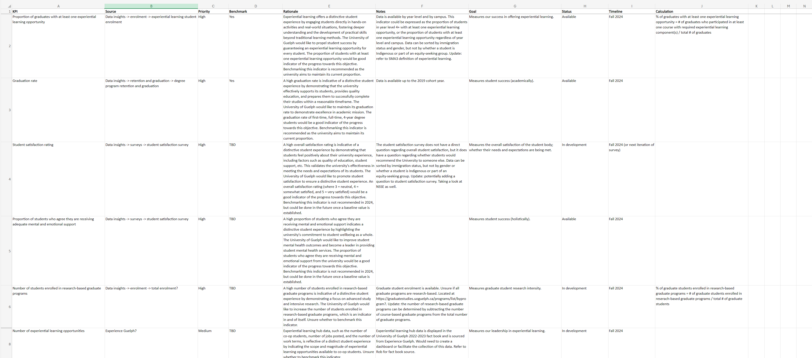
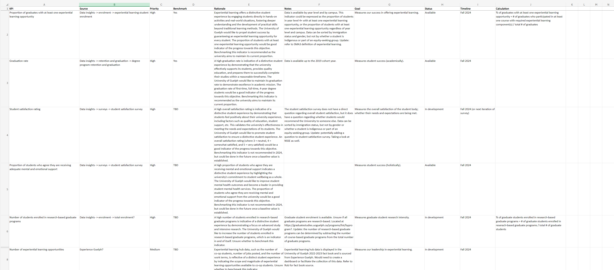

SUMMER 2024 WORK TERM REPORT
Thomas Martin
Data Collection Co-op Student
June 2024 - August 2024
INTRODUCTION
This work term report is an in-depth overview of my experience as a co-op student during my work term at the University of Guelph in the Office of the President, where I served as a Data Collection Co-op Student from June 2024 to August 2024.
OUR TIME: UNIVERSITY OF GUELPH STRATEGIC PLAN 2022-2027

The University of Guelph launched its strategic plan in 2022 to better align the institution with its mission, vision, and values. It serves as a foundation for future decisions, a basis for other strategic documents (such as the strategic research plan), and drives meaningful change within the university. It is structured around five key objectives and one key enabler:
- Deepening our global impact
- Transformation through Indigenization and Equity, Diversity, and Inclusion (IEDI)
- Advancing our student experience
- Building a sustainable tomorrow
- Supporting staff and faculty success
- Leveraging financial and digital capacity
Each of these objectives was supported by a set of key performance indicators (KPIs) that helped track the university's progress. In my role as a data collection co-op student, I worked to refine and enhance these KPIs, collaborating with various departments to gather, analyze, and report data that measures the university's advancement toward its goals.
WORK TERM GOALS
Throughout this work term, I had three main learning goals. These goals were to enhance my inquiry and analysis skills when developing new KPIs, to improve my business and operational communication skills within a business organization, and to improve my knowledge and skills in data collection and analysis skills where applicable.
CRITICAL & CREATIVE THINKING - INQUIRY & ANALYSIS
My first goal for this work term was to enhance my inquiry and analysis skills when developing new KPIs. I wanted to identify gaps within the strategic plan's existing KPIs, perform an environmental scan of Ontario/Canadian universities to identify common KPIs, and develop a strategic plan proposal/report.
Building on the strategic plan's goals and objectives, I identified gaps and areas for improvement within its existing KPIs. Through an environmental scan of Ontario/Canadian universities, I compared their mission, vision, and values with those of the University of Guelph. This allowed me to assess where our current KPIs were effective and to propose new KPIs for areas that needed improvement.
 

After developing a new set of KPIs, significant time and effort was spent determining the most effective way to present each KPI. I focused on clearly articulating the value and role of each KPI within the context of the strategic plan, ensuring they accurately reflected the plan's goals and objectives.
Although a formal strategic plan proposal/report was not completed due to timeline adjustments and delays in data validation, most of the necessary components are in place for a proposal/report to be developed in the future.
COMMUNICATING - INTEGRATIVE COMMUNICATION
My second goal for this work term was to improve my business and operational communication skills within an organization. I wanted to communicate effectively with other departments within the university to facilitate data collection for the strategic plan proposal/report, and lay the groundwork for annual/regular reporting.
There were many moving parts and diverse data sources across the university, which made identifying the origin of each KPI challenging. Some KPIs had clear sources, such as dashboards or data briefs, while others required direct data requests from specific departments within the university.
A data request document was developed to track all data requests and identify the departments or individuals responsible. This process ensured that data was collected from the correct sources and helped establish reliable data sources for future annual or regular reporting.
LITERACY - TECHNOLOGICAL LITERACY
My third goal for this work term was to improve my knowledge and skills in data analysis and collection tools where applicable. I wanted to maintain or improve my current knowledge and skills in Excel, and create Tableau dashboards if required.
While I didn't have the opportunity to create Tableau dashboards of my own, I frequently worked with University-created dashboards and am motivated to create my own in future personal projects. For KPIs with available data, I was able to create basic sample visualizations with Excel. I did not learn any new skills in Excel, but I was able to maintain my existing skillset.
JOB DESCRIPTION & RESPONSIBILITIES
My day-to-day responsibilities evolved over the course of the work term as goals and priorities shifted. Instead of focusing on daily activities, I will provide a detailed outline of how the work term progressed as a whole.
My initial task was to conduct a broad environmental scan of Ontario and Canadian universities to understand their mission, vision, values, and the KPIs they used to track progress. This led to the creation of a preliminary report outlining common KPIs, although not all were directly applicable to our strategic plan.
Next, the broad report was narrowed down to a more relevant list of KPIs that we believed might align with our strategic plan. Some KPIs were more significant than others. After receiving feedback on this refined list, we created an Excel sheet detailing each KPI's priority, rationale, and source — evaluating whether it was high or low priority within the strategic plan, how it connected to the plan's goals and objectives, and whether a readily available data source existed for it.
Following additional feedback, we further refined the list of KPIs. Some were removed due to redundancy, as they overlapped with others, while others were excluded because they lacked feasible data sources. We also defined clear goals for each KPI, specifying exactly what each was intended to measure.
Afterward, we compiled a list of data requests to various departments and individuals within the university to initiate data collection. While waiting for responses, we organized the data that was readily available for validation, and I gathered sector averages where possible to provide a benchmark for tracking progress. Once most of the requested data had been received (though some KPIs remained unresolved), we sent our list of KPIs to Institutional Research and Planning for validation.
As the term was nearing its end, I focused on clearly mapping out data sources and highlighting areas that were still unresolved.
RELATION TO ACADEMIC STUDIES
Throughout my work term, I gained and refined several transferable skills that will be valuable in my future studies. The most significant of these was collaboration. I worked closely with another data collection co-op student for the entire term, which enhanced both my ability to collaborate effectively and my trust in another person's work. Additionally, I had the opportunity to collaborate with various departments within the university during data collection and validation, further strengthening this skill.
Another important skill I developed was conducting research and environmental scans. By examining other universities — understanding their values and the KPIs they use to assess progress — I learned how to gather insights that can influence project outcomes. This skill will be particularly useful in future academic or personal projects, allowing me to draw from completed work in similar fields and conduct research that informs and guides my own efforts.
inally, I refined my approach to process-based improvement. Instead of tackling a project in its entirety from the outset, I learned to incrementally build on initial efforts, incorporating feedback to make iterative improvements. This method proved effective in developing a set of KPIs that better align with the university's mission, vision, and values, thanks to the valuable insights and guidance from my peers."
CONCLUSION
Overall, my work term as a Data Collection Co-op Student at the University of Guelph was an great experience that significantly contributed to my personal and professional growth. Throughout this work term, I had the opportunity to engage deeply with the university's strategic plan, refine key performance indicators, and collaborate across various departments. These experiences not only enhanced my skills in data collection, research, and communication, but also provided me with a solid foundation in process-based improvement. As I move forward in my academically and professionally, the skills and insights gained during this work term will serve as a strong asset in achieving future goals.
ACKNOWLEDGEMENTS
I would like to express my gratitude to the Office of the President for the opportunity to spend the past three months with them. Special thanks go to David and Kim for providing the resources and support necessary for my success, and to Suni for her collaboration and support throughout the entire term.